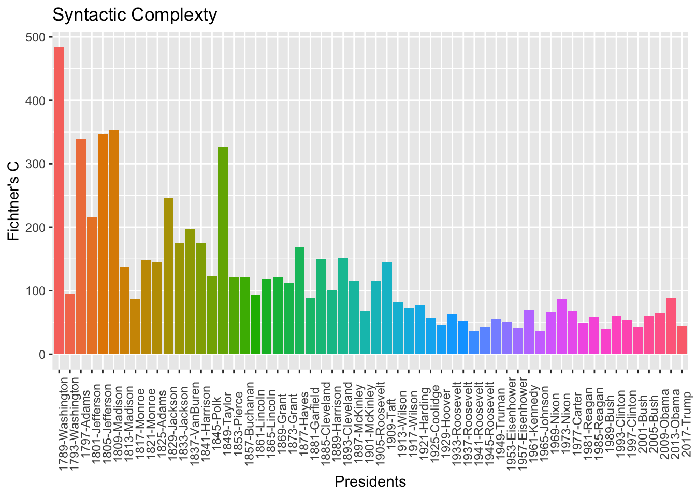

Chapter 8 Constructions and Idioms
8.1 Chinese Four-character Idioms
Many studies have shown that Chinese makes use of large proportion of four-character idioms in the discourse. This chapter will provide a exploratory analysis of four-character idioms in Chinese.
8.2 Dictionary Entries
In our demo_data directory, there is a file dict-ch-idiom.txt, which includes a list of four-character idioms in Chinese. These idioms are collected from 搜狗輸入法詞庫 and the original file formats (.scel) have been combined, removed of duplicate cases, and converted to a more machine-readable format, i.e., .txt.
Let’s first import the idioms in the file.
## [1] "阿保之功" "阿保之勞" "阿鼻地獄" "阿鼻叫喚" "阿斗太子" "阿芙蓉膏"## [1] "罪無可逭" "罪人不帑" "作纛旗兒" "坐纛旂兒" "作姦犯科" "作育英才"## [1] 56536In order to make use of the tidy structure in R, we convert the data into a tibble:
8.3 Case Study: X來Y去
We can create a regular expression pattern to extract all idioms with the format of X來X去:
To analyze the meaning of this constructional schema, we may need to extract the X and Y in the schema:
idiom_laiqu <-idiom %>%
filter(str_detect(string, ".來.去")) %>%
mutate(pattern = str_replace(string, "(.)來(.)去", "\\1_\\2")) %>%
separate(pattern, into = c("w1", "w2"), sep = "_")
idiom_laiquOne empirical question is how many of these idioms are of the pattern X=Y (e.g., 想來想去, 直來直去) and how many are of X!=Y (e.g., 說來道去, 朝來暮去):
idiom_laiqu %>%
mutate(structure = ifelse(w1==w2, "XX","XY")) %>%
count(structure) %>%
ggplot(aes(structure, n, fill = structure)) + geom_col() 
8.4 Exercises
idiom and extract the idioms with the schema of 一X一Y.
idiom as our data source, now if we are interested in all idioms that have duplicated characters in them, with schemas like either _A_A or A_A_, where A is a fixed character. How can we extract all idioms of these two types from idiom? Also, provide the distribution of the two types.

X=Y vs. X!=Y.
